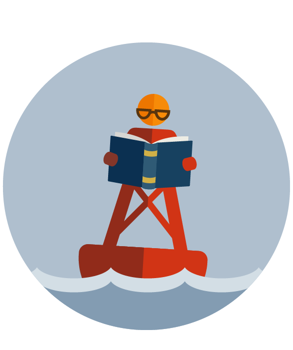

Research & Testing

Baculus's protoypes have been field tested to withstand a variety of situations and environments, but centered mostly around the urban environment of New York City and a disaster situation entailing intermittent electricy and an internet blackout. Unlike existing mesh network deployments currently operating in several cities, Baculus is designed to arrange its connection coverage to adapt to changing needs on the ground. In addition, the system offers readily-available applications which were tailored to match the changing needs of a wide variety of use-cases.
Use Cases
Our original informal user interviews with community members of Red Hook highlighted the need for neighbors to be able to communicate with each other in order to let each other know of any number of situations ranging from the availability of emergency supplies to knowing where to get free crab burgers. Because of this, we opted for building a very general group messaging application, allowing people to use it for whatever situation they happen to find it useful for, rather than pigeonholing users into a limited set of use case with specialized applications.
The first of the three prototypes is designed for The Next Sandy, emphasizing a situation where rainfall would necessitate waterproofing Baculus's electronic components, but where one could recharge a Baculus battery from a nearby neighborhood on higher ground.
The second prototype is designed for a similar situation, but with a lighter, also waterproof shell which was designed for situations where the weight of the system is a concern. This backpack is also transparent, which may be a requirement for backpacks in some situations.
The third prototype was designed for a sunnier environment, but one where electricity may be extremely sparse due to electrical outages covering larger, less walkable areas than NYC. This version uses a solar panel system for charging its battery with a backpack configured to attach MOLLE-compatible components, which are more ubiquitious in rural communities with readily-available supplies for outdoor excursions.
Testing
 Testing the solar power setup
Testing the solar power setup
Each prototype was tested for battery life, signal strength/distance, as well as transporability, emphasizing the need to be comfortable enough for an operator to carry across a high-elevation neighborhood (Park Slope, Brooklyn) into a lower elevation (Red Hook) without needing to travel too often for optimizing signal coverage or recharging.
Battery Life: Configurations between prototypes varied slightly, most notably with the addition of a screen on the first prototype. On average, each prototype allowed a 36 hour continuous battery life with low traffic and no specialized power consumption optimization.
Signal: Wi-Fi uses a crowded radio band used by everything from cordless office phones to microwave ovens. In order to test a maximum range in something close to an environment experiencing an electrical blackout, we conducted signal distance tests in the center of McCarren Park, Brooklyn, reaching 500 meters from a smartphone to one node amidst some park foliage. The advertised line-of-sight range for the antennas we use is approximately 30 kilometers.
Comfort: In our short-distance trials, two prototypes may be too heavy to be worn comfortably for extended periods of time, so each backpack was designed to stand vertically without needing to be worn once its position and angle is set. The third prototype, designed for a more spread-out area where large distances may need to be travelled, is the most comfortable.